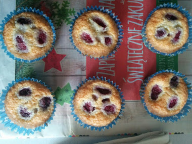

Babeczki z malinami
Trudność przepisu:
Składniki:
| Nazwa składnika | Potrzebna Ilość |
|---|---|
| masło | 150 g |
| cukier | jedna szklanka |
| mąka pszenna | dwie szklanki |
| maliny | po 5 na babeczkę |
Przygotowanie
- Zmieszaj wszystkie składniki, poza malinami w misce
- Powstałą mieszanką wypełnij papilotki do babeczek, mniej więcej do ¾ wysokości
- Do każej z babeczek delikatnie wepchnij po 5 malin
- Piecz w piekarniku nagrzanym do 180℃ przez 20 minut lub aż wbity w babeczki patyczek będzie suchy (jak będzie mokry od malin to się nie liczy)
